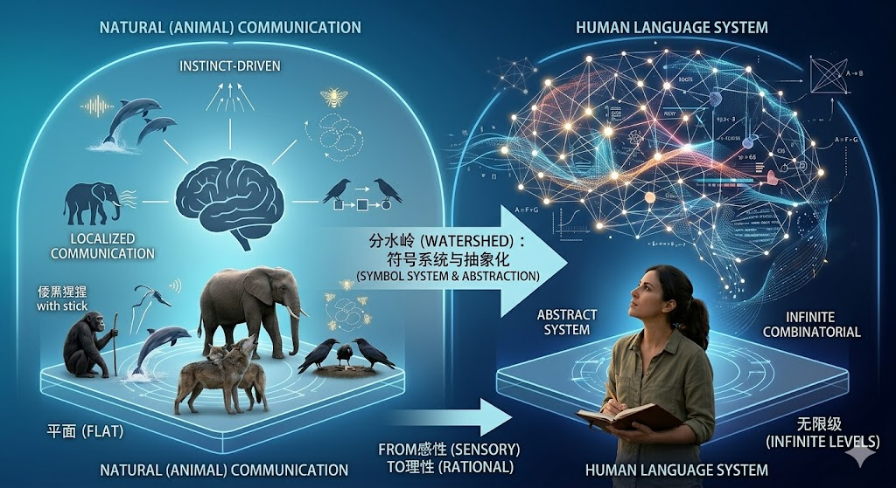
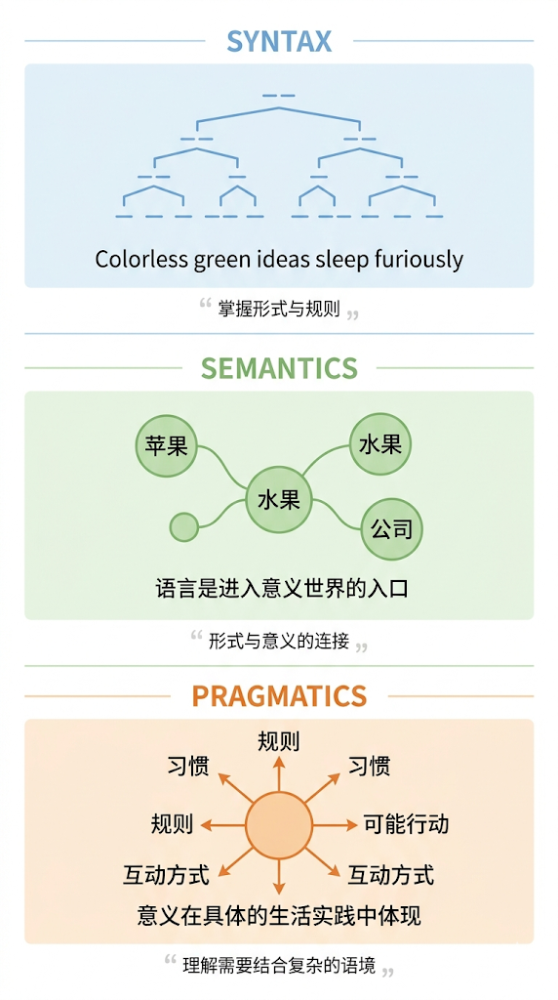

第一章 引言：语言理解及其可操作化定义
1.1 语言和智能
本文主要讨论对语言的理解，在进入”理解”这一核心概念之前，有必要先观察一下语言在人类智能中扮演的角色。本文总结为以下三个思考角度。
语言是人类区别于其他动物的重要特点
广义上的语言并非人类独有，但在所有已知的物种中，人类语言在以下两个维度上呈现出质的飞跃，而非仅仅程度上的差异，这与人类的智能紧密相关。
第一，语言实现了符号到概念的映射。不同于动物信号与具体刺激的直接绑定，人类语言中的词语可以指向实体、时间、空间乃至意识本身这样的抽象对象：语言学家查尔斯·霍凯特[1]将这种能力称为”位移性”（displacement），视之为人类语言区别于动物交流的核心设计特征之一(Hockett, 1960)。恩斯特·卡西尔[2]把这一能力视为人类进入”现实的新维度”的关键：人与动物的根本区别，在于人生活在符号的维度中：在外部刺激与行为反应之间，人插入了一个符号系统，使得不在场的对象、过去与未来的事件、乃至纯粹的概念关系都可以被表征和操作 (Cassirer, 1923)。这里”符号”不是指路标或图标这类简单标志，而是指一类能够把感知内容与概念意义稳定连接起来的表征形式：语言是其中最系统、最强大的一种。

第二，语言具备独特的递归能力（recursion）：把一个语言结构无限嵌套进同类结构的能力，使得有限的词汇可以组合出无限丰富的语义。马克·豪瑟、诺姆·乔姆斯基与特库姆塞·菲奇[3]在系统对比人类与动物认知系统后指出，迄今为止没有任何动物交流系统展现出真正等效的递归能力 (Hauser et al., 2002)。 例如：人类可以说”我认为他知道我怀疑她是否相信……“，这种无限嵌套在动物交流中并不存在。正是这种能力，使人类能够表达假设、反事实、他人的信念和预期等高阶概念，而不是只能传递当下可见的信息。
语言不只是智能的输出媒介，更参与了思维的建立和运作
语言是抽象思维的载体和条件，使得人类能够表达和处理期望、假设、推断等在物理世界中没有直接对应物的内容。约翰·戈特弗里德·赫尔德[4]早在18世纪就指出，抽象必须以某种符号”固定”为前提：只有当注意力能够集中到语言描述的某个特征，才能进一步从中抽象 (Herder, 1772)。从这个角度看，语言不是思维的外衣，而是抽象思维得以发生的必要条件之一。
路德维希·维特根斯坦[5]在《逻辑哲学论》中留下了一句概括性的判断：“我的语言之边界，即是我的世界之边界”(Wittgenstein, 1921)。这句话并不只是说语言很重要，而是说人所能认知、表达和思考的世界，与人所能使用的语言是共同延伸：语言能到达的地方，就是世界（对”我”而言）存在的地方；语言无法表达之处，世界对”我”来说就是无法把握的。换言之，语言不只是记录抽象思维结果的工具，更是抽象思维得以展开的空间本身。
语言在人类认知中的地位并不只是表达工具。列夫·维果茨基[6]的研究揭示，语言是思维运作的脚手架：儿童正是通过语言（“内语言”）来组织、调节和推进自己的认知过程 (Vygotsky, 1934/1986)。 所谓”内语言”（inner speech），指的不是对他人说话，而是人在心里默默”说话”的方式。维果茨基观察到，当儿童遇到障碍或困难任务时，其自我言语会显著增加：这说明此时的语言不是在交流，而是在调节思维。从这一视角看，智能与语言的关系并非单向的”先有智能、再用语言表达”，而是语言本身参与了高级认知能力的形成，二者相互塑造。
语言能力本身并不等同于智能
乔姆斯基[7]从另一个方向提供了重要的提醒：语言能力（language faculty）是人类心智中一个相对专门化的模块，它虽然是人类独特的认知禀赋，却并不自动等同于一般意义上的智能 (Chomsky, 1965)。一个系统可以在语言形式处理上表现出色，却不必然因此就具备更广泛的推理、规划或行动能力。
一个系统掌握了语言的形式规律，是否就意味着它”理解”了语言所承载的意义？目前看来，智能的关键并不在于语言本身，而在于语言理解。理解可以被视为智能在语言层面最核心的形式：它不只是解构或者生成流利的句子，而是把语言符号与意义、世界和行动真正连接起来。研究语言理解，某种程度上就是在研究语言这条通道能在多大程度上承载和体现智能：这也正是自然语言理解在人工智能研究中始终占据核心地位的原因。贯穿这些研究的一个核心问题在于：系统的语言行为，其在多大程度上反映了真正意义上的智能。

- 查尔斯·霍凯特（Charles F. Hockett，1916-2000）是美国语言学家，长期执教于康奈尔大学，以提出人类语言的设计特征（design features）理论而闻名，其中"位移性"正是他所归纳的人类语言区别于动物交流的最关键特征之一。 ↩
- 恩斯特·卡西尔（Ernst Cassirer，1874-1945）是德国哲学家，先后执教于汉堡大学、牛津大学和耶鲁大学，以"符号形式哲学"著称，认为人是"符号的动物"，语言、神话和科学都是人类符号活动的不同形式。 ↩
- 马克·豪瑟（Marc D. Hauser，1959-）是美国进化生物学家和认知科学家，曾长期执教于哈佛大学。诺姆·乔姆斯基（Noam Chomsky，1928-）是美国语言学家、哲学家和认知科学家，长期执教于麻省理工学院（MIT），其生成语法理论彻底重塑了现代语言学。W. 特库姆塞·菲奇（W. Tecumseh Fitch，1963-）是美国进化生物学家和认知科学家，执教于维也纳大学，研究聚焦于语言进化、动物交流与认知的生物学基础。三人合作的这篇论文提出了"狭义语言官能"（Faculty of Language in the Narrow Sense, FLN）与"广义语言官能"（Faculty of Language in the Broad Sense, FLB）的著名区分，其中递归能力被论证为 FLN 唯一独特的人类语言成分。 ↩
- 约翰·戈特弗里德·赫尔德（Johann Gottfried Herder，1744-1803）是德国启蒙时期哲学家、神学家和文学批评家，在语言哲学、历史哲学和美学领域均有深远影响；其《论语言的起源》是18世纪关于语言、思维与人类文化之间关系的最重要哲学著作之一。 ↩
- 路德维希·维特根斯坦（Ludwig Wittgenstein，1889-1951）是奥地利裔英国哲学家，长期执教于剑桥大学，被公认为20世纪最具影响力的哲学家之一；其早期代表作《逻辑哲学论》追求语言与世界的逻辑对应，后期《哲学研究》则转向"意义即使用"：这两种截然不同的立场对语言哲学和人工智能研究均产生了深远影响。 ↩
- 列夫·维果茨基（Lev S. Vygotsky，1896-1934）是苏联心理学家，以文化历史心理学理论著称；他的《思维与语言》深刻揭示了语言如何在社会互动中逐步内化为个体思维工具，是发展心理学与认知科学的经典著作。 ↩
- 诺姆·乔姆斯基（Noam Chomsky，1928-）是美国语言学家、哲学家和认知科学家，长期执教于麻省理工学院（MIT）；他提出的生成语法理论和语言能力（language faculty）概念彻底重塑了现代语言学，并直接推动了认知科学这一领域的诞生。 ↩
参考文献
Cassirer, Ernst. 1923. Philosophie der symbolischen Formen, Vol. 1: Die Sprache. Bruno Cassirer, Berlin. (English translation: The Philosophy of Symbolic Forms, Vol. 1: Language. Yale University Press, 1955.)
Chomsky, Noam. 1965. Aspects of the Theory of Syntax. MIT Press, Cambridge, MA.
Hauser, Marc D., Noam Chomsky, and W. Tecumseh Fitch. 2002. The faculty of language: What is it, who has it, and how did it evolve? Science, 298(5598):1569–1579.
Hockett, Charles F. 1960. The origin of speech. Scientific American, 203(3):88–96.
Herder, Johann Gottfried. 1772. Abhandlung über den Ursprung der Sprache. Christian Friedrich Voß, Berlin. (English translation: Treatise on the Origin of Language. In Philosophical Writings, Cambridge University Press, 2002.)
Vygotsky, Lev S. 1986. Thought and Language. Edited by Alex Kozulin. MIT Press, Cambridge, MA. (Original work published 1934.)
Wittgenstein, Ludwig. 1921. Tractatus Logico-Philosophicus. Annalen der Naturphilosophie. (English translation by D. F. Pears and B. F. McGuinness. Routledge, London, 1961.)
1.2 理解与智能
语言理解是最难以被机器复制的能力之一。正因如此，自然语言处理（Natural Language Processing，NLP）长期被视为人工智能皇冠上的明珠。然而，相对于智能的难以描述，语言更容易被人直觉感知到：一个系统能否处理语言中的隐含逻辑、抽象概念和复杂意图，可以被其他人观察、比较和讨论。换句话说，语言是智能的一个”可见接口”。正是在这个意义上，艾伦·图灵[8]在设计他的”模仿游戏”时，选择了语言对话而不是其他媒介，来作为智能存在与否的判据：语言交流是他认为足以让观察者推断内部智能的外部证据 (Turing, 1950)。
从这一点出发，语言理解就不只是人工智能研究的众多课题之一，而被视为通往通用人工智能（Artificial General Intelligence，AGI）的关键分水岭。如果一个系统真正能够理解语言：把握语义、推断意图、适应语境、连接世界，那么它在理解人类知识、参与人类协作方面就几乎不存在根本性的障碍；反之，如果一个系统不能处理语言中的隐含逻辑、抽象概念和复杂意图，它就无法触达人类真实的认知世界。因此，语言理解是判断系统是否真正具备人类层次智能的最重要窗口之一。
这也解释了为什么历史上每一次 AI 能力的重大跃升，几乎都以语言能力的提升作为最直观的呈现形式。从最早的 ELIZA 到 SHRDLU，从机器翻译的初步成功到 BERT 的预训练突破，再到 ChatGPT 引发的全球关注，这些里程碑事件的社会影响力，都在相当程度上来自语言能力让人感到震惊的事实。在某种意义上说，语言理解的进展总是与关于 AI 本质的更广泛争论相互缠绕。
- 艾伦·图灵（Alan M. Turing，1912-1954）是英国数学家、逻辑学家和计算机科学家，被公认为计算机科学与人工智能的奠基人之一；他在1950年的论文《计算机器与智能》中提出"模仿游戏"（后称图灵测试），首次将"机器能否思考"这一哲学问题转化为可操作的实验判据。 ↩
参考文献
Turing, Alan M. 1950. Computing machinery and intelligence. Mind, 59(236):433–460.
1.3 理解与语言
所谓语言理解，并不是对语言符号的被动接收，而是把语言形式与意义内容、语境条件、说话者意图、背景知识、推理后果和可能行动等等诸多因素联系起来。一个主体之所以被认为理解了一句话，不只是因为它识别了词和句法结构，而是因为它知道这句话在当前情境中意味着什么、为什么会这样说、会引出什么判断，以及据此应当如何回应或行动。换句话说，理解是一种连接能力：它把形式连接到意义，把意义连接到世界，把世界连接到行动。
理解的这种复杂性，本质上是由语言的本质决定的。语言并不是一个简单的符号堆积体，而是人类社会中承载意义、组织经验、传递知识和协调行动的媒介。爱德华·萨丕尔[9]指出，语言并不是简单的命名工具，而是人类经验组织方式的一部分；从这一角度看，理解语言并不只是识别词汇，而是进入一个由类别、关系和文化经验共同塑造的意义世界 (Sapir, 1921)。 与语言在智能形成中的作用类似，并不是先有一个完全整理好的世界，再给其中每样东西贴上名字；相反，人们往往正是通过语言中已有的分类方式、习惯表达和文化框架来组织经验、区分事物并理解世界。因此，语言本身会参与意义的形成，而不只是被动记录已经存在的意义。本杰明·李·沃尔夫[10]进一步将这一思想推向极致，论证不同语言的词汇与语法结构会系统性地影响使用者对现实的感知与分类方式：语言框架本身就在塑造认知分类 (Whorf, 1956)。
在语义哲学中，无论是戈特洛布·弗雷格[11]对”意义/指称”关系的分析，还是后来维特根斯坦对”意义即使用”的强调，都说明语言的意义不能仅靠形式本身穷尽，而必须放到指称关系、使用规则和生活形式中去把握 (Frege, 1892; Wittgenstein, 1953)。 弗雷格指出一个表达指向什么对象，与它以什么方式呈现这个对象，并不是同一回事。最典型的例子是两个说法可能指向同一个对象，但带给人的认知内容却并不相同；这说明理解一句话，并不只是把词和外部对象机械对应起来，还要把握它在概念上的表达方式。维特根斯坦则是在强调：一个词或一句话的意义，不是孤立地藏在词内部，而是在具体生活实践中、在规则、习惯和互动方式里体现出来。也就是说，要理解语言，不能只看句子长什么样，还要看它在什么场景中被怎样使用。
因此，理解语言就天然不只是处理符号串，而是把符号与对象、概念、语境、规则和行动联系起来。然而，这样的复杂性又使得语言理解极难直接把握。它既包含语义层面的对应，也包含语境层面的适配；既涉及对当前表达的解释，也涉及对未说出内容的推断；既要求把握意义，也要求在必要时将意义转化为行动。
- 爱德华·萨丕尔（Edward Sapir，1884-1939）是美国语言学家和人类学家，先后执教于芝加哥大学和耶鲁大学，以语言与思维、语言与文化关系的研究著称，是"萨丕尔-沃尔夫假说"的奠基人之一。该观点认为不同语言的词汇与语法结构会系统性地影响使用者对现实的分类和感知方式。 ↩
- 本杰明·李·沃尔夫（Benjamin Lee Whorf，1897-1941）是美国语言学家，以"语言相对论"（linguistic relativity）著称，与萨丕尔共同为"萨丕尔-沃尔夫假说"做出贡献。 ↩
- 戈特洛布·弗雷格（Gottlob Frege，1848-1925）是德国数学家、逻辑学家和哲学家，执教于耶拿大学，被公认为现代数理逻辑和分析哲学的奠基人之一；他在《论意义与指称》中提出的"意义"与"指称"的区分，至今仍是语言哲学和语义学最核心的议题之一。 ↩
参考文献
Frege, Gottlob. 1892. Über Sinn und Bedeutung. Zeitschrift für Philosophie und philosophische Kritik, 100:25–50. (English translation: On sense and reference. In Translations from the Philosophical Writings of Gottlob Frege, pages 56–78. Blackwell, Oxford, 1952.)
Sapir, Edward. 1921. Language: An Introduction to the Study of Speech. Harcourt, Brace and Company, New York.
Whorf, Benjamin Lee. 1956. Language, Thought, and Reality: Selected Writings of Benjamin Lee Whorf. Edited by John B. Carroll. MIT Press, Cambridge, MA.
Wittgenstein, Ludwig. 1953. Philosophical Investigations. Blackwell, Oxford. (Translated by G. E. M. Anscombe.)
1.4 理解的不可直接观察性
对理解的探索之所以困难，首先在于它不是一个可以直接观察的对象。研究者看不到系统内部是否真的”懂了”，只能看到系统的外在行为、输出结果、与环境互动后的效果，以及人类对这些表现的解释。因此，所谓自然语言理解研究，从一开始就不仅面临模型设计问题，还面临着判断依据问题。
一种典型的判断依据是”系统内部是否真的形成了与人相近的意义把握”这样的标准。这并不是因为它已经是一个可检验的研究规范，而是因为在常识心理学、语言哲学和认知解释中，理解本来就首先被设想为主体对意义、对象和意图的真实把握。换句话说，“内部语义表征是否与人一致”是一种直观的解释性标准：它说明人们心里认为什么叫作理解。但事实上，这一标准并不能直接告诉研究者应该如何测量理解。因为目前的技术手段无法直接检验系统内部是否拥有与人类相同的意义表征，甚至对人类理解的机制和意义表征也尚未得到足够明确的观察。
对语言理解的探索始终带有一种”黑箱认识论”特征：只能通过外部证据来推断系统是否达到了某种可接受的理解水平，而对系统内部究竟发生了什么，难以直接观察和验证。对理解的判断往往不是直接看到”懂了”，而是根据外部表现来反推”它大概懂了多少”。也正因为如此，理解研究总是在”内部状态不可见”与”外部证据必须足够强”之间寻找平衡。不同历史阶段的核心差别，恰恰在于研究者如何选择这种外部证据。这种”只能通过输入输出推断内部状态”的研究困境，正是控制论创始人诺伯特·维纳[12]所描述的黑箱问题的典型形式 (Wiener, 1948)。
只有当研究者能够把”理解”转写为某种可观察、可测量、可比较的对象时，理解才会从哲学问题转化为工程问题和科学问题。也正是在这里，自然语言理解史的核心问题才真正浮现出来：既然抽象意义上的理解如此丰富而复杂，那么究竟什么是”理解已经发生”的证据？
- 诺伯特·维纳（Norbert Wiener，1894-1964）是美国数学家，长期执教于麻省理工学院，他在《控制论》一书中系统论述了通过观察输入输出关系来研究系统行为的黑箱方法论，这一思想深刻影响了人工智能和认知科学的发展。 ↩
参考文献
Wiener, Norbert. 1948. Cybernetics: Or Control and Communication in the Animal and the Machine. MIT Press, Cambridge, MA.
1.5 理解的可操作性定义
可操作性定义是把一个抽象概念转化为一组可以被观察、测量或比较的操作规则。对自然语言理解而言，可操作的关键在于怎样的行为、结果或任务成效，可以被当作”系统已经理解”的证据。图灵测试、机器翻译、专项理解任务、交互表现和任务完成，正是不同阶段对这一问题给出的不同答案。它们彼此之间并非简单替代关系，而是随着技术条件、应用目标和评测体系的变化而不断转变的对理解的判断依据。例如，用能不能翻译、能不能答题、能不能完成任务作为判断标准。这样一来，抽象概念才会变成可以做实验、可以比较结果的研究对象。
本文使用”可操作性定义”这一说法，主要是为了概括一种分析视角，其并非该领域广泛使用的术语。这借鉴了历史上科学哲学和社会科学方法论中的 operational definition、operationalism、operationalization 等相近提法，它们强调概念需要通过可执行、可观察的操作来获得研究意义。这一思想最早由物理学家珀西·布里奇曼[13]系统阐发 (Bridgman, 1927)。 其中，operational definition 即本文视角，是”给一个概念规定可测量的定义方式”，operationalism 更像是强调这种方法的总体立场，而 operationalization 则更偏向把抽象概念一步步落实成实际变量、任务或指标的过程。
可操作性定义的价值在于使研究者能够围绕同一问题形成可讨论、可比较、可积累的知识。没有可操作性定义，“理解”只能停留在泛泛而谈的印象判断；有了可操作性定义，研究者才能设计系统、收集数据、建立指标、比较方法，并在形成相对稳定的证据标准，并进一步推进对具体方法的探索。也就是说，可操作性定义不是研究的附属品，而是研究之所以能成立的前提。
可操作性定义并不必然在逻辑上等于对理解的”收缩”。更准确地说，它要求研究者在某个历史阶段选定一种可被检验的证据形式，用它来代表或近似理解的某个方面。只要这种证据与研究目标匹配，可操作化本身并不是对理解本体的否定，而是把抽象问题转化为可研究对象的必要步骤。问题在于，任何具体定义都会突出某些维度、暂时搁置另一些维度，因此它既使研究得以展开，也会重新塑造研究者关注”理解”的哪些侧面。
本文后续从以下几个角度阐述理解在研究发展过程中的可操作性定义：
行为定义——图灵测试：是否能在外部语言行为上表现得像理解者。 等价转换定义——机器翻译：是否能在翻译中保持意义。 分解定义——专项任务：是否能在若干局部任务中表现出理解能力。 交互定义——个性化图灵测试：是否能在大规模个性化用户使用中表现出合理的语言行为。 行动定义——任务完成：是否能在复杂环境中完成给定任务目标。
这些定义往往都代表理解的某个方面，这并不是说这些定义就等于理解本身，而是它们被当作理解的替身或证据。例如，能高质量翻译，并不等于全面理解语言，但它可以被当作”系统至少抓住了某些关键意义关系”的强证据。
- 珀西·布里奇曼（Percy W. Bridgman，1882-1961）是美国物理学家，长期执教于哈佛大学，1946年诺贝尔物理学奖得主；他在《现代物理学的逻辑》中系统阐述了操作主义（operationalism），主张科学概念的意义应当通过具体、可执行的测量操作来定义。 ↩
参考文献
Bridgman, Percy W. 1927. The Logic of Modern Physics. Macmillan, New York.
1.6 理解定义的历史性和开放性
理解是本文关注的中心问题，但不同阶段对理解的界定并不是凭空出现的，而总是在特定技术条件、资源结构、应用需求和评测体系中形成。某一种理解标准之所以在某个时代显得合理，不只是因为它在概念上有说服力，更因为当时的数据资源、计算能力、技术水平，使它第一次变得可研究、可比较、可扩展。图灵测试之所以重要，与早期资源匮乏、只能依赖人工判断有关；机器翻译之所以长期处于中心，与其工程目标清晰、输出结果外显有关；专项任务之所以兴起，与标注语料、共享任务和 benchmark 体系成熟密切相关；交互和任务完成之所以成为新标准，则与大模型、在线部署、工具调用和环境反馈能力的提升分不开。
因此，本文并不仅仅把技术看作理解研究的背景，而把它与数据、算力等一起理解为”理解定义”得以成立的历史条件。技术越发展，研究者越有能力提出更高、更复杂的理解标准；而新的理解标准一旦提出，又会反过来牵引新的技术方向。这种相互塑造关系，是理解研究不断迁移的内在动力之一。
更重要的是，理解的定义并不是静止不变的。随着数据资源、计算能力、技术水平的发展，人们对”什么才算理解”的要求也会不断提高。一个时代被视为足够强的理解证据，在另一个时代可能只被看作最低门槛；一个阶段的关键挑战，在下一个阶段又可能成为基本能力。因此，本文所讨论的理解定义的发展，并不只是不同定义之间的替换，更是理解标准在历史中不断升级的过程。也正因为如此，研究人员仍应继续探索更高层次的理解标准和新的挑战形式。
1.7 后续章节的结构示意
为了便于把握全文主线，可以先用一张简化示意图概括后续几章的逻辑。它不是严格时间轴，而是”理解定义如何迁移”的逻辑链：
抽象的理解问题
|
v
第二章 行为定义——图灵测试：是否能在外部语言行为上表现得像理解者
|
v
第三章 等价转换定义——机器翻译：是否能在翻译中保持意义
|
v
第四章 分解定义——专项任务：是否能在若干局部任务中表现出理解能力
|
v
第五章 交互定义——个性化图灵测试：是否能在大规模个性化用户使用中表现出合理的语言行为
|
v
第六章 行动定义——任务完成：是否能在复杂环境中完成给定任务目标
|
v
第七章 问题与讨论：理解的深层争议
|
v
结语：理解定义的迁移
这张图的重点不在于说明旧定义被简单淘汰，而在于指出：后续各章分别用不同的证据来回答”系统是否理解了语言”这一问题。
1.8 本章思考题
参考讨论见附录”第一章思考题参考讨论”。
- 如果”理解”本身不可直接观察，那么自然语言理解研究所处理的，究竟是”理解本身”，还是”理解的外部证据”？
- 当研究者把理解落实为翻译、问答、推理或任务完成时，这究竟是在逼近理解，还是在事实上重写”什么才算理解”？
- 为什么一个抽象概念一旦进入科学研究，往往就必须被转化为某种代理指标？这种转化的主要收益与代价分别是什么？
- 能否结合一个日常生活中的例子，说明人们以为自己看见的是”理解本身”，其实看见的只是某种外部证据？
- 如果未来出现一种比”任务完成”更强的新判据，它最可能补足今天的什么不足，又最可能带来什么新的收缩？